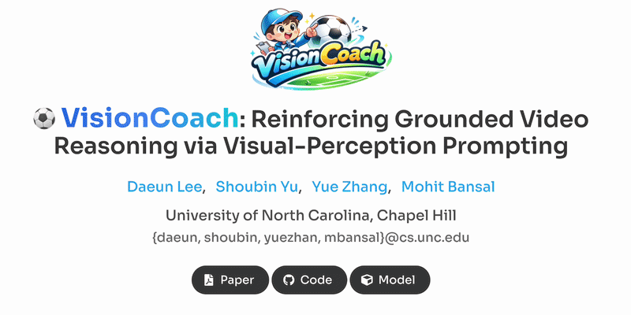
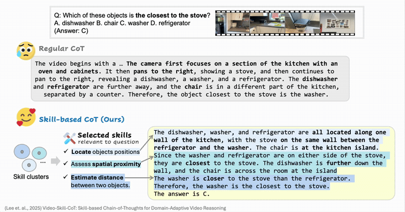
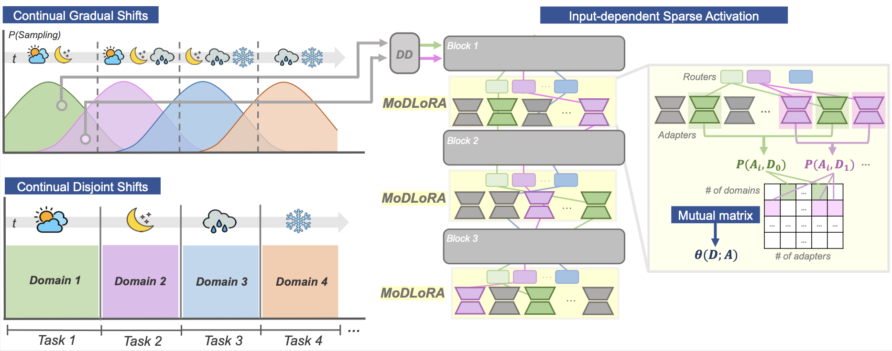
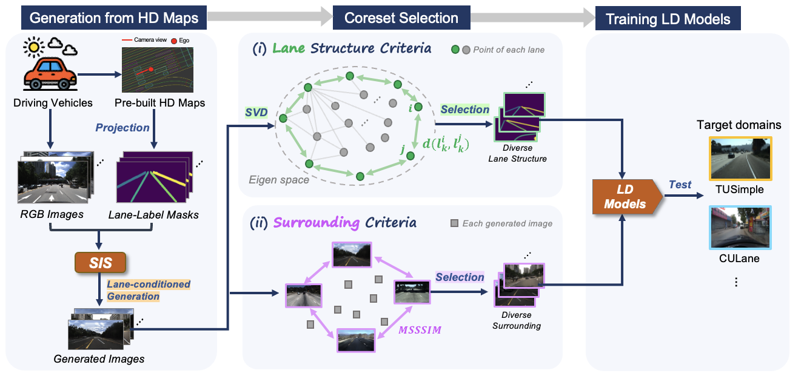
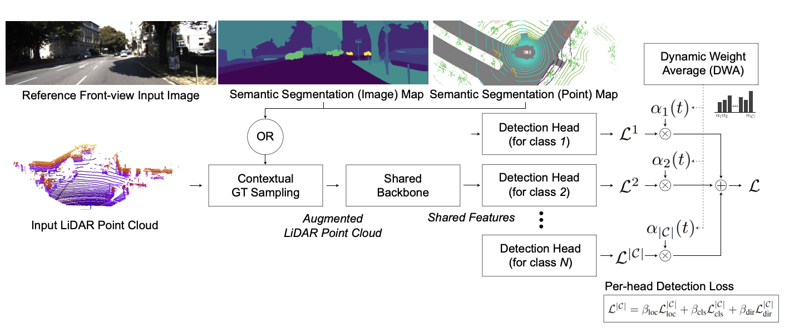
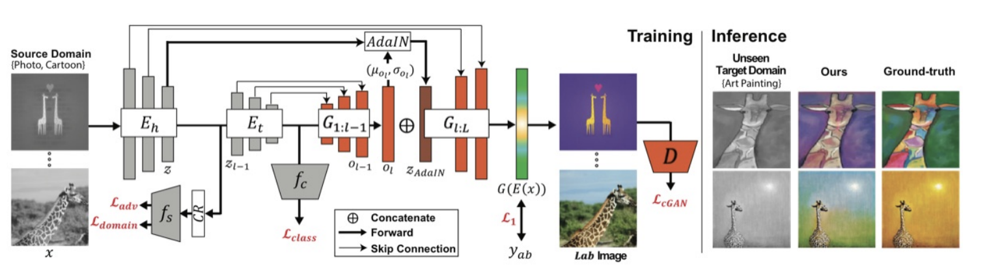

Daeun Lee
About Me
Thanks for visiting my website! ✨
I am a 2nd-year Ph.D. student at UNC Chapel Hill, MURGe-Lab working with Prof. Mohit Bansal.
Previously, I was advised by Prof. Jinkyu Kim at Korea University, Prof. Sung Ju Hwang at KAIST.
I have also spent time as a Research Intern at Adobe Research (2025) and Meta (2026).
Research Direction
I began my AI research journey through autonomous driving, motivated by its potential to make a large-scale impact on society. Now I am interested in how we can make a better world for underrepresented people using "multimodality".
The research topics I am most excited about are:
- Video (Multimodal) Reasoning / Generation / Understanding with RL and post-training
- Embodied AI with Sensor Modalities like Gaze, Audio, 3D LiDAR, HD Maps etc.
News
- [May. 2026] Join Meta Superintelligence Labs for 2026 Summer Research Intern!
- [Apr. 2026] VideoRepair is accepted to ACL 2026 Findings 🌊
- [Mar. 2026] New preprint is out: check out VisionCoach
- [Feb. 2026] StreamGaze is accepted to CVPR 2026 🌅
- [Dec. 2025] New preprint is out: check out StreamGaze and IndustryNav
- [Aug. 2025] Video-Skill-CoT is accepted to EMNLP 2025 Findings 🇨🇳
- [Jun. 2025] New preprint is out: check out Video-Skill-CoT
- [May. 2025] Join Adobe Research for 2025 Summer Research Intern!
- [Jan. 2025] Invited talk at Cisco Meraki
- [Nov. 2024] New preprint is out: check out VideoRepair
- [Aug. 2024] Started PhD journey at the UNC Chapel Hill MURGe-Lab 🎓
- [May. 2024] BECoTTA is accepted to ICML 2024 🇦🇹
- [Apr. 2024] One paper is accepted to CVPRW 2024 🇺🇸
- [Jan. 2023] One paper is oral-presented at WACV 2023 🏝️
- [Dec. 2022] I finished my first research internship at NAVER LABS!
Publications
-

-
 ACL Findings
The 64th Annual Meeting of the Association for Computational Linguistics (ACL) Findings, 2026.
ACL Findings
The 64th Annual Meeting of the Association for Computational Linguistics (ACL) Findings, 2026. -
 CVPR
The IEEE/CVF Conference on Computer Vision and Pattern Recognition (CVPR), 2026.
CVPR
The IEEE/CVF Conference on Computer Vision and Pattern Recognition (CVPR), 2026. -

EMNLP FindingsEmpirical Methods in Natural Language Processing (EMNLP) Findings, 2025. -

ICMLInternational Conference on Machine Learning (ICML), 2024. -

CVPRWCVPR Data-Driven Autonomous Driving Simulation Workshop (CVPRW), 2024. -

WACVIEEE/CVF Winter Conference on Applications of Computer Vision (WACV), 2023. -

ECCVEuropean Conference on Computer Vision (ECCV), 2022.
Services
- Conference Reviewer:
- CVPR/ECCV/ICCV 2022-2026
- AAAI 2025
- NeurIPS 2025-2026
Misc
🧸 I am a big fan of Sanrio (Hello Kitty, Mymelody, Kuromi), all teddy bears, and K-POP!
💐 Always appreciate all of my great advisors and collaborators!
Powered by Jekyll and Minimal Light theme.